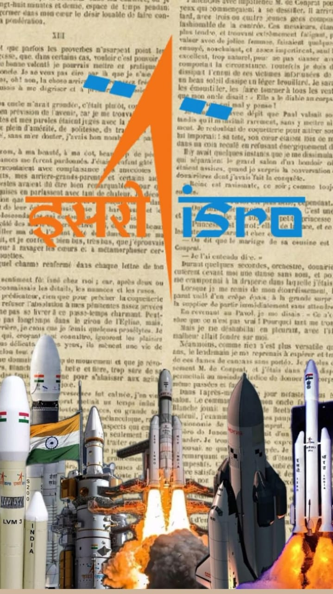

The Indian Space Research Organisation (ISRO) is the national space agency of India. It was established in 1969 under the leadership of Dr. Vikram Sarabhai, who is known as the father of the Indian space programme. ISRO functions under the Department of Space, Government of India, and its headquarters are located in Bengaluru.

ISRO’s primary objective is to develop space technology and use it for national development, while also contributing to global space research. It has played a vital role in areas such as satellite communication, remote sensing, weather forecasting, navigation, agriculture, and disaster management.
ISRO is internationally admired for its cost-effective and reliable missions. One of its most significant achievements is Mars Orbiter Mission (Mangalyaan), which made India the first country to reach Mars orbit in its first attempt. Other notable missions include Chandrayaan-1, which discovered water molecules on the Moon, Chandrayaan-2 and 3, Aditya-L1 (solar mission), and NavIC, India’s own navigation system.
ISRO also develops launch vehicles such as PSLV and Gaganyaan, India’s human spaceflight programme. Through its achievements, ISRO has made India a leading space-faring nation and continues to inspire scientific innovation and self-reliance.